Terra C-137
Progettazione di interfaccia

Il Progetto
Questo progetto è stato realizzato per l'esame di comunicazione visiva e design delle interfacce. Il brief prevedeva la realizzazione di un totem turistico da posizionare in una terra parallela alla nostra. Il totem doveva servire da guida ai turisti presenti su questa terra.
Il mio contributo
In questo progetto ho contribuito alla realizzazione di wireframe e mockup di alcune pagine del sito e allo sviluppo front-end di alcune schermate in JavaScript e CSS.
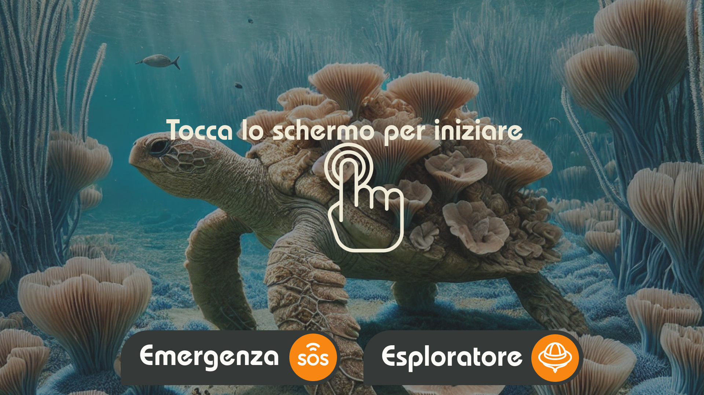
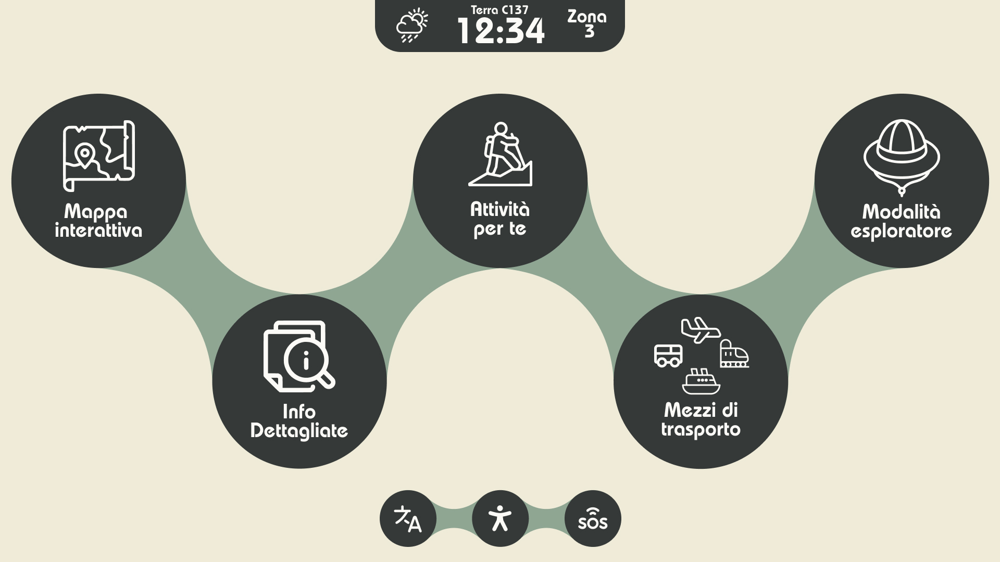
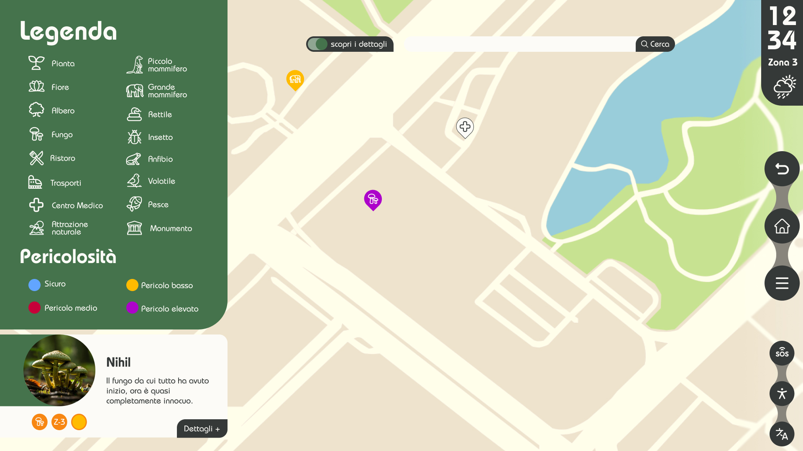
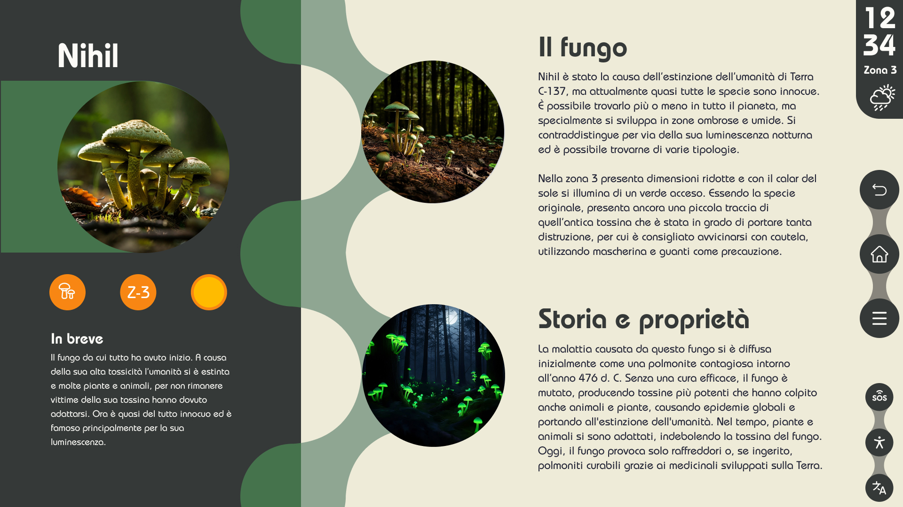
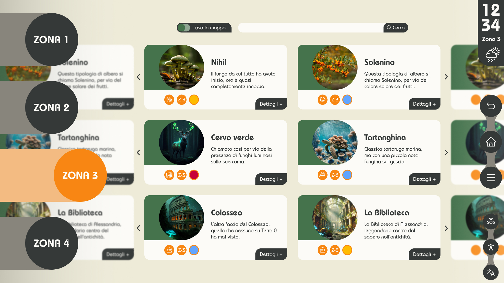
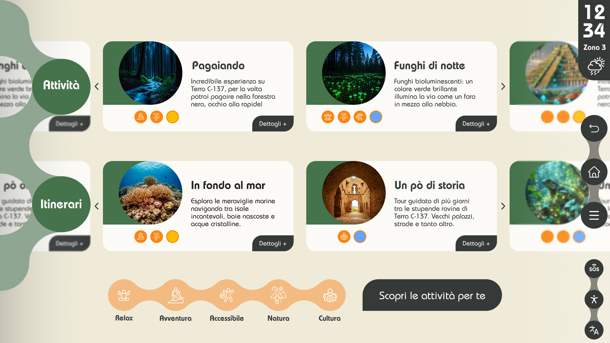
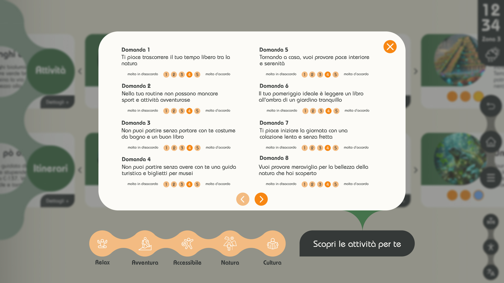
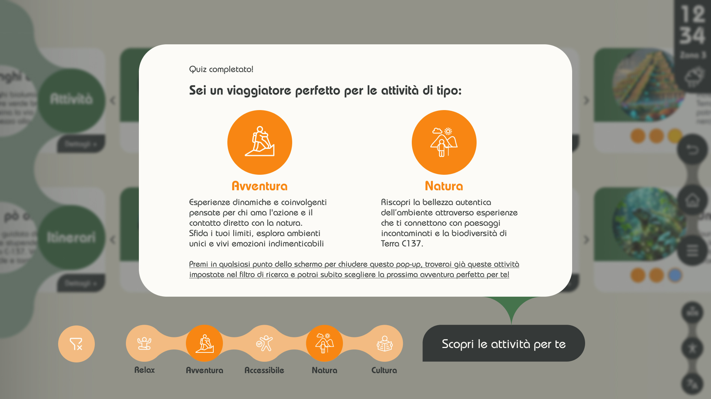
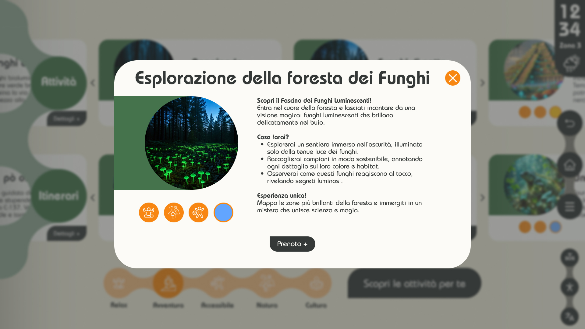
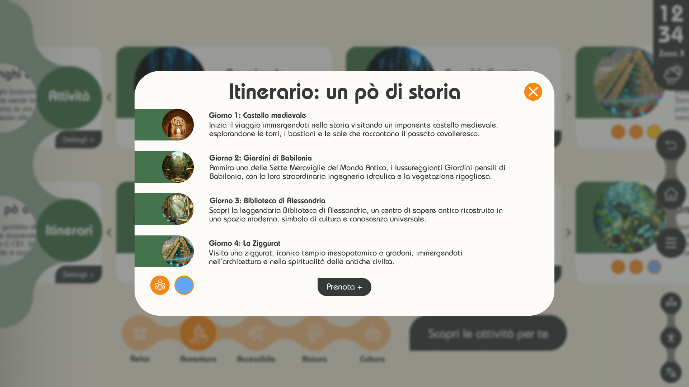
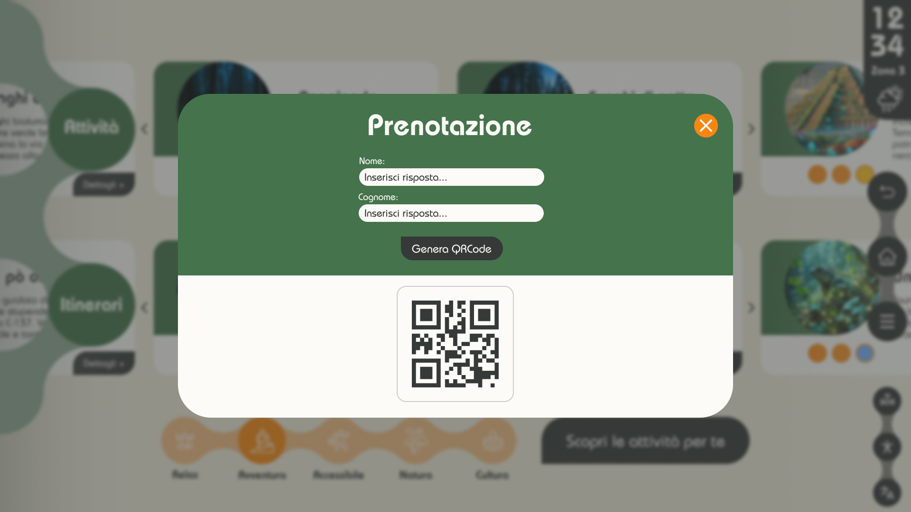
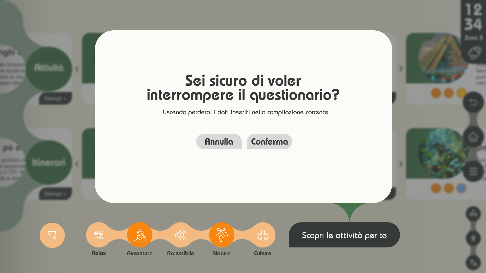
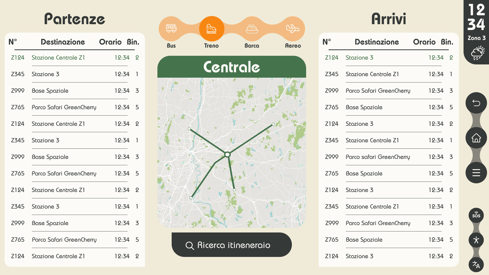
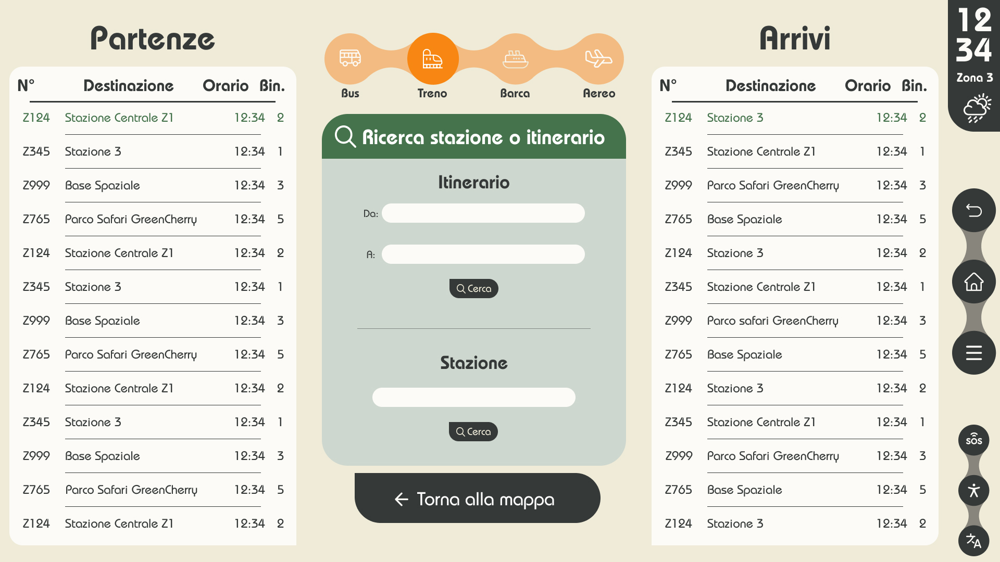
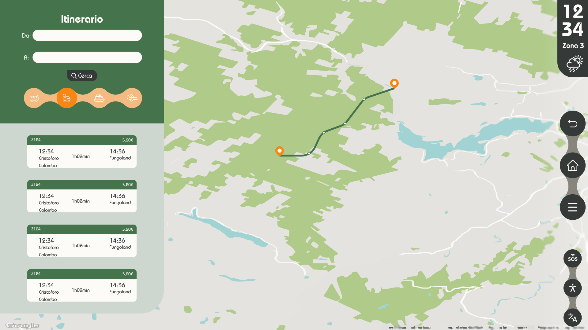
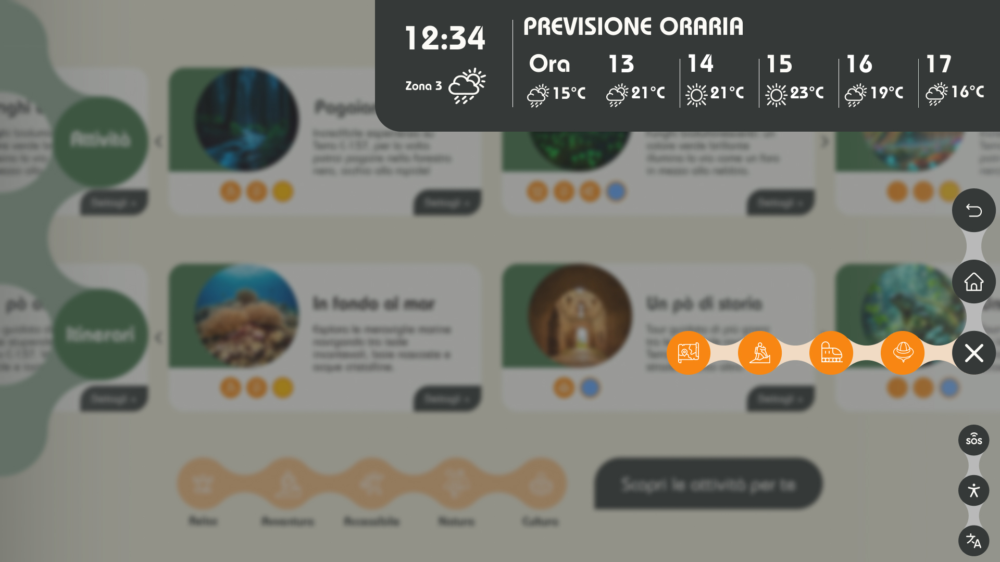
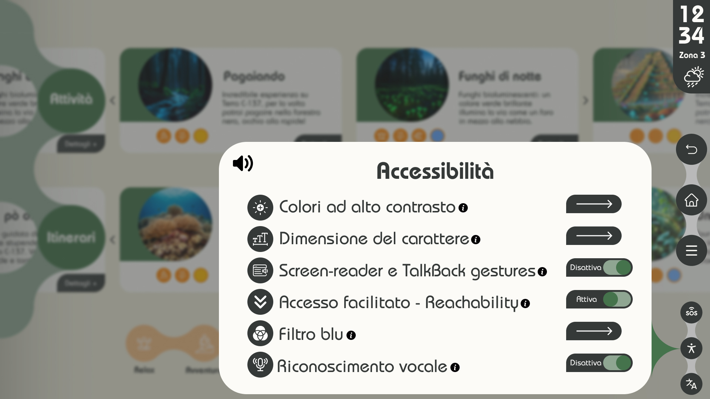